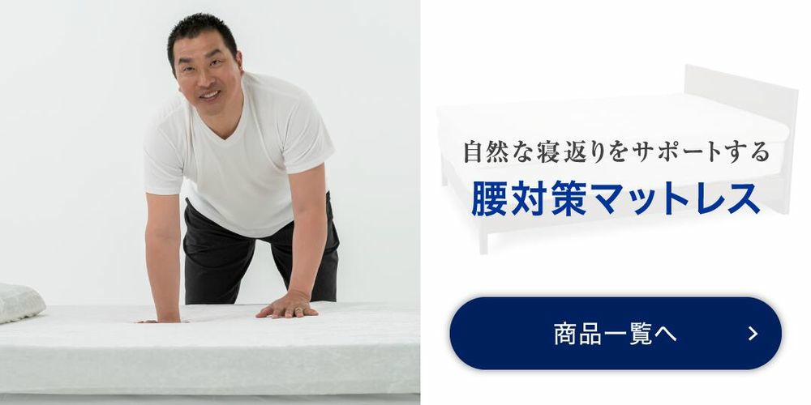
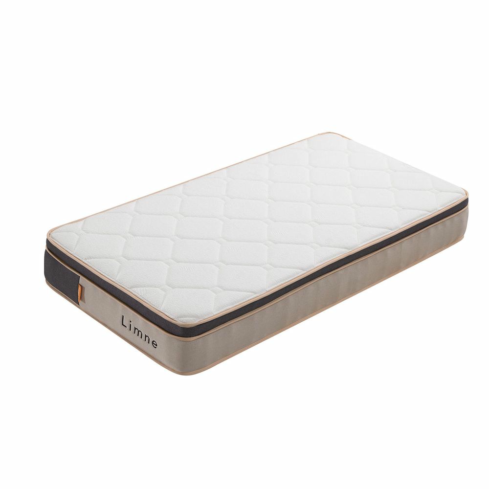
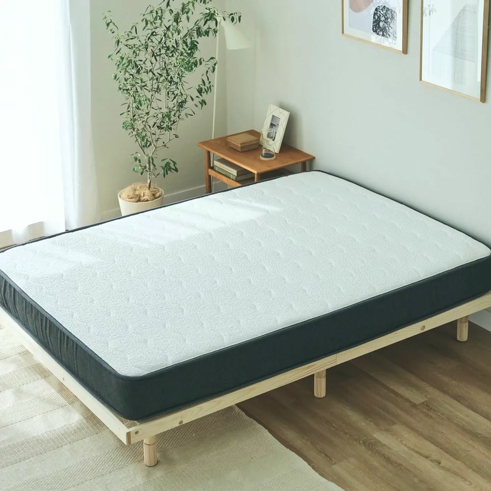

マットレスの硬さと厚さで失敗しない選び方｜4商品の仕様を同じ物差しで比較
マットレスの買い替えで迷う理由の多くは、硬さ、厚さ、価格の比べ方が商品ごとに違うことです。このページでは、比べる軸を「硬さの選びやすさ」「厚さと構造」「価格」「試しやすさ（返品・トライアル条件）」の4つにそろえ、咲夜レアルフィット、NELLマットレス、モットン、リムネ リッチコイルの4商品を、公式情報で確認した仕様のまま並べます。なお、このページは寝具の「選び方」の解説であり、特定の症状への効果を約束するものではありません。強い痛みやしびれが続く場合は、寝具の買い替えより先に医療機関への相談を検討してください。
- 厚さと価格のバランスで選ぶなら：咲夜レアルフィット（厚さ26cmのポケットコイル・シングル49,990円・日本製）
- 体重に合わせて硬さを選びたいなら：モットン（硬さ3段階・シングル44,800円）
- 自宅で長く試してから決めたいなら：NELLマットレス（120日トライアル）
- 二層コイルの厚みで選ぶなら：リムネ リッチコイル（厚さ25cm・120日返金保証）

こんにちは、ネムリです。硬さと厚さという2つの軸の決め方から、4商品の仕様比較までを案内します。
早見表：4商品の仕様を先に眺める
| 商品 | 構造・特徴 | 厚さ | シングル価格（税込） | 試しやすさ | 詳しく見る |
|---|---|---|---|---|---|
| 咲夜レアルフィット | ポケットコイル（フィット・ジャスト465個／キープ504個）・寝心地3種から選択・日本製・圧縮梱包 | 26cm | 49,990円 | お試し制度なし | 咲夜レアルフィットの解説／公式サイト |
| NELLマットレス | ポケットコイル1,173個・センターハード構造・13層構造 | 公式ページに厚さの数値表記なし | 79,900円 | 120日トライアル | NELLの解説 |
| モットン | 高反発ウレタン（ナノスリー）・硬さ3段階から選択 | 10cm | 44,800円 | 90日返金保証・硬さ交換あり | モットンの解説 |
| リムネ リッチコイル | 二層ポケットコイル・97×195cm | 25cm | 79,900円（セール時59,900円の案内あり） | 120日返金保証 | リムネ リッチコイルの解説 |
価格・仕様は2026年11月25日に各商品の公式情報で確認した内容です。価格や条件は変わることがあるため、購入前に各公式サイトで当日の表示を確認してください。
比べる軸の決め方｜このページの基準
硬さの選びやすさ：硬さを段階で選べるか、体重などの目安が公開されているかを見ます。厚さ・構造：厚さ、コイルやウレタンの構造、コイル数が公開されているかを見ます。価格：シングルサイズの税込価格を比べます。試しやすさ：トライアルや返金保証は、期間だけでなく申請条件や送料の負担まで確認対象にします。出典のない実測値や個人の体験談は、比べる根拠にしていません。

硬さは「体重と寝姿勢」で考える
硬さの感じ方は、体重や寝姿勢で変わります。「硬ければ良い」「柔らかければ良い」と決めつけず、沈み込みすぎないかを基準に考えてください。硬さを段階で選べる商品では、公開されている目安を使うのが安全です。4商品の中で硬さの段階選択があるのはモットンだけで、公式の目安は次の通りです。
| 硬さ | N値 | 体重の目安 |
|---|---|---|
| ソフト | 140N | 45kg以下 |
| レギュラー | 170N | 46〜80kg |
| ハード | 280N | 81kg以上 |
咲夜レアルフィットは、硬さの段階ではなく寝心地の方向を3種（フィット／ジャスト／キープ）から選ぶ形です。NELLとリムネ リッチコイルは段階選択がなく、硬さの相性はトライアルや返金保証の期間中に確かめる前提で考えます。
咲夜レアルフィットの公式サイトで寝心地3種を確認する厚さは「置き方」で考える
ベッドフレームに置く場合は厚さ20cm以上の商品が候補になりやすく、床に直接置く場合は湿気対策や片づけやすさもあわせて考える必要があります。咲夜レアルフィットは厚さ26cm、リムネ リッチコイルは厚さ25cmのポケットコイル系です。モットンは厚さ10cmの高反発ウレタンで、ベッドにも床にも置きやすく、今の寝具に重ねる使い方も考えられます。厚みのあるコイル系と薄型のウレタン系は寝心地の性質が違うため、「厚い方が上」という比べ方はしません。

サイズと搬入経路の確認も先に済ませておきましょう。シングルでも幅と奥行は商品で異なります。
サイズと搬入経路を先に測る
咲夜レアルフィットとリムネ リッチコイルのシングルは、どちらも97×195cmです。注文前に、寝室の設置場所、ドアの幅、廊下の曲がり角を測っておくと、届いてから置けないという失敗を避けられます。咲夜レアルフィットは圧縮梱包で届くため搬入はしやすい形ですが、開封すると元の厚さに戻るので、開封は設置場所の近くで行ってください。重量も商品で異なり、咲夜レアルフィットは寝心地の種類によって27〜34kg、NELLは22.0kg、リムネ リッチコイルは約19kgです（いずれもシングル）。
保証は「日数」だけでなく条件まで読む
トライアルや返金保証は、申請できる期間、最低利用日数、返送料の負担などが商品ごとに異なります。NELLは120日間フリートライアルですが、返品の受付は到着から14日経過後です。モットンの返金保証は「90日間使ってから、その後14日以内に申請する」仕組みで、返送料と手数料は購入者負担です。リムネ リッチコイルは120日間の完全返金保証ですが、無金利分割で支払う場合は30日間になります。咲夜レアルフィットにはお試し制度がなく、5年保証が付きます。日数の長さだけで決めず、公式の条件ページまで確認しましょう。

用途別に選ぶなら
| 用途・悩み | 候補 | 理由 |
|---|---|---|
| 厚さのあるコイルで買い替えたい | 咲夜レアルフィット | 厚さ26cm・ポケットコイル・日本製・圧縮梱包 |
| 硬さを体重に合わせたい | モットン | 硬さ3段階（140N／170N／280N）から選択可能 |
| 自宅で長く試したい | NELLマットレス | 120日トライアル・コイル1,173個 |
| 二層コイルを試したい | リムネ リッチコイル | 二層ポケットコイル・厚さ25cm・120日返金保証 |
| 価格を抑えたい | モットン／咲夜レアルフィット | シングル44,800円／49,990円（税込） |
素材ごとの良い点と気になる点
ポケットコイルの良い点：コイルが1つずつ独立して体を支える構造のため、コイル数や厚さなどの仕様を数字で比べやすいことです。気になる点：厚さや重さがある商品が多く、搬入や設置場所の確認が必要になります。
高反発ウレタンの良い点：硬さを段階で選べる商品があり、価格帯も比較的抑えやすいことです。気になる点：湿気がこもりやすい素材のため、敷きっぱなしを避けて定期的に風を通す手入れが必要です。
よくある質問
- Q. マットレスを替えれば腰の悩みは解決しますか？
- A. マットレスは治療器具ではありません。このページは、硬さや厚さの選び方を整理したものです。強い痛みやしびれがある場合は、医療機関に相談してください。
- Q. 硬さはどう選べばいいですか？
- A. 体重と寝姿勢を目安に考えます。硬さを段階で選べるモットンのような商品では公開されている目安を参考にし、選べない商品ではトライアルや返金保証の条件を確認してから決めると安心です。
- Q. 咲夜レアルフィットのサイズと価格を教えてください。
- A. シングルは97×195×26cm、ポケットコイルは寝心地の種類により465個または504個、日本製、圧縮梱包です。価格はシングル49,990円（税込・通常生地）で、2026年11月25日に公式情報で確認した内容です。
- Q. NELLのトライアル期間はどれくらいですか？
- A. 120日間フリートライアルです。返品の受付は到着から14日経過後で、申請条件や返送方法は公式サイトで最新の内容を確認してください。
- Q. 圧縮梱包のマットレスで注意することはありますか？
- A. 開封すると元の厚さに戻るため、開封は設置場所の近くで行うのがおすすめです。復元にかかる時間の目安は、商品ごとの案内を確認してください。
- Q. 価格はこのページの金額で固定ですか？
- A. いいえ。このページの価格は2026年11月25日時点の確認情報です。セールや販売店によって変わるため、購入前に各公式サイトで当日の価格を確認してください。
まとめ｜比べる軸をそろえれば、マットレス選びは失敗しにくくなる
マットレス選びは、硬さの選びやすさ、厚さと構造、価格、試しやすさの4つの軸で比べると整理しやすくなります。厚さ26cmの日本製ポケットコイルを5万円前後で探すなら咲夜レアルフィット、硬さを体重に合わせて選びたいならモットン、自宅で長く試したいなら120日トライアルのNELL、二層コイルに興味があるならリムネ リッチコイルが候補です。どの商品も、購入前に公式サイトで当日の価格と条件を確認してから決めてください。4商品の公式仕様を並べた公式仕様の照合表と、総合ランキングはマットレスおすすめ比較ランキングにあります。
咲夜レアルフィットの公式サイトを見る
まとめです。先に硬さと厚さの決め方を押さえておくと、4商品の違いが読み取りやすくなります。
※このページにはアフィリエイト広告が含まれます。リンク経由で申し込みがあると紹介料が発生しますが、順位と点数は料金・条件の比較基準だけで付けています。